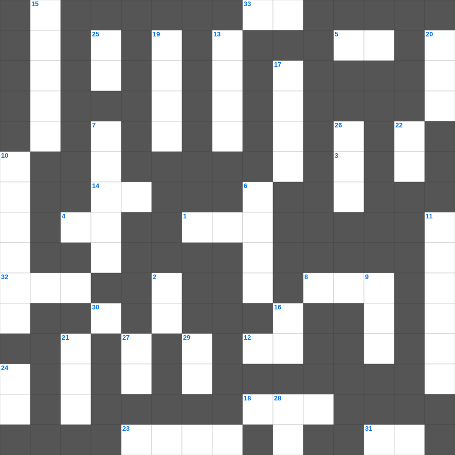

성경 속 식물 이야기
📌 서비스 정의
십자가로세로는 교회 주보와 주일학교에서 사용할 수 있는 성경 기반 가로세로 퍼즐 서비스입니다. 성경 인물, 사건, 핵심 구절을 바탕으로 제작되었습니다. 온라인 풀이 및 인쇄 기능을 제공합니다.
무료로 즐기는 성경 성경 주일학교 퀴즈! 35개의 힌트로 구성된 가로세로 낱말 퍼즐입니다. PC와 모바일 모두 지원되며, 정답을 바로 확인할 수 있어 혼자서도 쉽게 풀 수 있습니다.

📝 가로 힌트
1. 구하라 그리하면 너희에게 주실 것이요 이것하라 그리하면 찾을 것이요
3. 야곱이 베개로 삼았던 것
4. 예수님이 십자가에서 돌아가신 사건
5. 좋은 땅에 떨어진 씨앗은 몇 배의 결실?
8. 사드락과 친구들이 던져진 곳
12. 요한이 요단강에서 예수님께 행한 예식
14. 기드온의 양털 시험
15. 공중에 나는 이것(다섯째 날)
18. 모세가 가나안 땅을 바라본 산
23. 롯의 아내가 뒤를 돌아보다 변한 것
30. 진리의 허리띠와 평안의 복음의 이것
31. 기쁜 소식, 즉 예수 그리스도의 이야기
32. 예수님이 세례받으실 때 성령이 이 모양으로 내려옴
33. 성령의 9가지 열매 중 첫 번째
📝 세로 힌트
2. 하나님의 뜻을 전달하는 것
3. 십계명이 새겨진 것
6. 노아의 방주가 머문 산
7. 기브온 족속이 여호수아를 속이려 가져온 것
9. 구름 기둥과 이것 기둥
10. 길가, 돌짝밭, 가시떨기, 좋은 땅 이야기
11. 성경의 마지막에 등장하는 생명나무 실과
13. 지붕을 뚫고 내려온 병자
15. 우리가 거할 영원한 집
16. 예배의 시작을 알리는 종소리나 기도
17. 할 수 있거든이 무슨 말이냐 믿는 자에게는 이것이 없느니라
19. 엘리야가 갈멜산에서 불로 응답받은 대결
20. 구원의 투구와 의의 이것
21. 예수님이 광야에서 시험받으신 기간
22. 성령의 9가지 열매 중 세 번째
24. 반석 위에 지은 집과 이것 위에 지은 집
25. 아합 왕이 뺏으려 했던 포도원 주인
26. 예수님의 무덤을 막았던 것
27. 하나님의 이름을 이것되이 일컫지 말라
28. 밭에 감추인 이것
📖 함께 읽으면 좋은 성경사전
퍼즐을 풀기 전에 읽으면 힌트가 쉬워지고, 풀고 나서 읽으면 내용을 한 번 더 복습할 수 있습니다.
🧩 이 퍼즐에서 배우는 내용
이 퍼즐은 성경 속 식물 이야기의 핵심 단어와 개념을 자연스럽게 복습할 수 있도록 구성되었습니다. 주일학교 수업이나 개인 성경공부에서 학습 내용을 점검하는 용도로 바로 활용할 수 있습니다.
🧑🏫 교회 교육 자료 활용
이 퍼즐은 주일학교 교재 추천 자료로 활용할 수 있고, 주일학교 주보에 넣기 좋은 분량으로 구성되어 있습니다. 수업용 주일학교 교안에 활동지로 붙이거나, 예배 후 복습용 주일학교 공과교재로 바로 사용할 수 있습니다.
🏷️ 키워드
성경 주일학교 퀴즈, 성경, 십자가로세로, 성경퀴즈, 말씀퀴즈, 가로세로퍼즐, 주일학교 교재 추천, 주일학교 주보, 주일학교 교안, 주일학교 공과교재